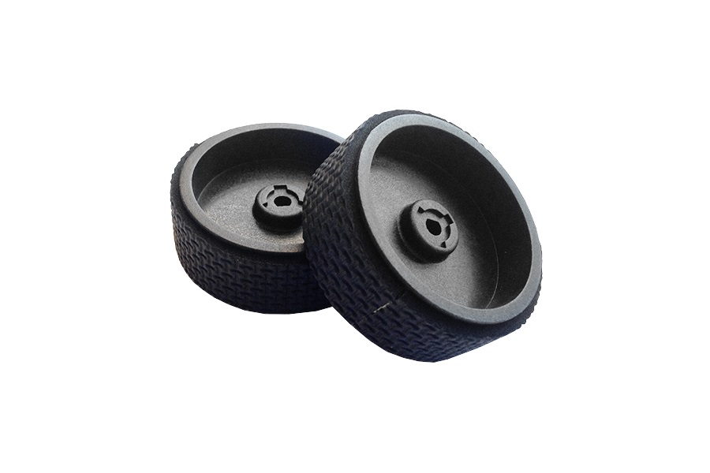

Welcome to ratai
Ratai 3 (2017) - Animaciniai filmai (online) | Pasakos.lt
2020.10.29 07:59Pasakos.lt TOP pagal IMDB TOP Disnėjaus pagal Metus pagal Abėcėlę Home Animaciniai filmai (online) Ratai 3 (2017)
Ratai 3 (2017)
Animaciniai filmai (online) 6 comments 2 lapkričio, 2017 adminAprašymas : Žaibas Makvynas grįžta! Pasiruoškite naujiems ir dar greitesniems nuotykiams lietuviškai dubliuotame animaciniame filme „Ratai 3“. Greičiausių pasaulio automobilių pasaulyje įsitvirtinęs Žaibas Makvynas mėgausi savo greičiu ir sėkme. Tačiau apakintas naujos kartos greitų lenktyninių automobilių jis šiek tiek pervertina savo galimybes Ir vieną dieną viskas apsiverčia aukštyn kojomis tiesiogine prasme. Automobiliukas patenka į avariją. Prognozės liūdnos – Žaibui Makvynui pranešama, kad jis niekada nebebus toks greitas, koks buvo. Ar Žaibui Makvynui pavyks įveikti sunkumus ir įrodyti, kad numeris 95 dar gali tapti pasaulio čempionu?
arba
Tags: 2017 , Animacija vaikams , Animaciniai filmai lietuviškai , Animaciniai filmai vaikams , Animaciniai filmukai , Animaciniai filmukai vaikams
Related Articles
Džokas (2011)
23 birželio, 2017 adminFantastiškos Moriso Lesmoro skraidančios knygos (2011)
13 rugsėjo, 2013 adminMažoji undinėlė (1989)
8 liepos, 2020 admin6 comments. Leave new
Minde 17 lapkričio, 2017 10:13Jega filmukas!
VYTAUTAS 24 lapkričio, 2017 20:27xD
Laura 24 vasario, 2018 22:32Nieko nerodo neverta ziureti per pasakos.lt
simonas 3 balandžio, 2018 18:29visai geras!!!
jj 11 birželio, 2018 11:27super
Aivaras Šaltenis 29 rugpjūčio, 2020 14:06pabandykit 1 leistuvą
Parašykite komentarą Atšaukti atsakymą
Kategorijos
Animaciniai filmai (online) (946) Animaciniai serialai (online) (521) Anime (online) (270) Apsakymai (27) Audio pasakos (76) Dainos vaikams (24) Diafilmai (2) Eiliuotos pasakos (32) Filmai vaikams (online) (93) Juokingos pasakos (6) Komedijos (online) (26) Komiksai (16) Lopšinės (22) Pasakėčios (83) Pasakos apie brolius (32) Pasakos apie Dievą (23) Pasakos apie gyvenimą (63) Pasakos apie gyvūnus (83) Pasakos apie karalius (72) Pasakos apie meilę (12) Pasakos apie mergeles (29) Pasakos apie raganas (16) Pasakos apie šeimą (43) Pasakos apie tinginius (6) Pasakos apie turtą (41) Pasakos apie velnią (22) Pasakos be galo (13) Sakmės ir padavimai (31) Senoji animacija (online) (557)Žaidimai tau!
TOP įrašai
Kempiniukas Plačiakelnis (6 sezonas) - peržiūrėta 638 873 Ledo šalis (2013) - peržiūrėta 583 062 Kempiniukas Plačiakelnis (7 sezonas) - peržiūrėta 582 870 Maša ir Lokys (visos serijos) - peržiūrėta 561 815 Kempiniukas Plačiakelnis (2 sezonas) - peržiūrėta 520 601 Simpsonai (24 sezonas) - peržiūrėta 467 489 Ratai 2 (2011) - peržiūrėta 439 487 Kempiniukas Plačiakelnis (5 sezonas) - peržiūrėta 436 491 Ilgo plauko istorija (2010) - peržiūrėta 362 382 Tomas ir Džeris (visos serijos) - peržiūrėta 334 600 Simpsonai (26 sezonas) - peržiūrėta 334 435 Simpsonai (12 sezonas) - peržiūrėta 330 944 Kempiniukas Plačiakelnis (3 sezonas) - peržiūrėta 288 760 Ledynmetis 4: Žemynų atsiradimas (2012) - peržiūrėta 285 599 Kempiniukas Plačiakelnis (1 sezonas) - peržiūrėta 282 180Naujausi įrašai
Nerealieji 2 (2018) Nerealieji (2004) Fiksikai: Didžioji paslaptis (2017) Tomas ir Džeris: Seklių užduotis (2015) Ledynmetis 5: Susidūrimas (2016)Naujausi komentarai
urtė apie Mažylis ir Karlsonas (1-2 serijos) Agne apie Ledynmetis 3 (2009) urtė apie Rifo pasaka 2 (2012) Saulius apie Garfildas (2004) urtė apie Pelenė (1950)Draugai
Anglų kalbos kursai Norvegų kalbos kursai Vokiečių kalbos kursai ŽodynasSąrašai A-Z
Animaciniai filmai pagal metus Senoji animacija pagal abėcėlę TOP Disnėjaus klasika TOP filmai pagal IMDBGairės
1969 2002 2004 2005 2006 2007 2008 2009 2010 2011 2012 2013 2014 2015 2016 2017 2018 2019 Animacija vaikams Animaciniai filmai lietuviškai Animaciniai filmai vaikams Animaciniai filmukai Animaciniai filmukai vaikams Anime lietuviškai Anime online Audio pasakos lietuviškai Audio pasakos vaikams Brolių Grimų pasakos Ezopo pasakėčios Filmai paaugliams Jonas Biliūnas Lietuvių liaudies pasakos Lietuvių sakmės Narutas filmukai Narutas lietuviškai Narutas online Pasakėčios apie gyvūnus Pasakėčios su moralu Pasakėčios vaikams Rusų filmai Senoji animacija lietuviškai Senoji animacija rusiškai Simpsonai filmukai Simpsonai lietuviškai Simpsonai online © 2020 Pasakos.lt - lietuvių liaudies pasakos, pasakos vaikams, senoji animacija, rusiški multikai online, tarybiniai multikai, animaciniai filmai online, animaciniai filmukai vaikams.